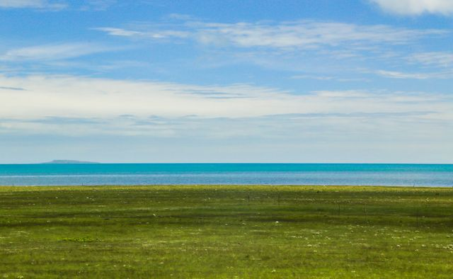
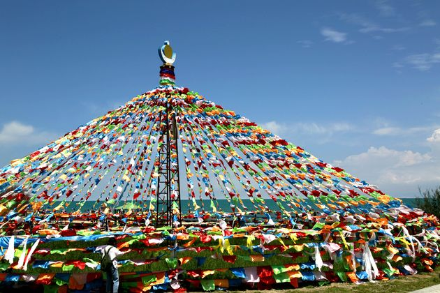
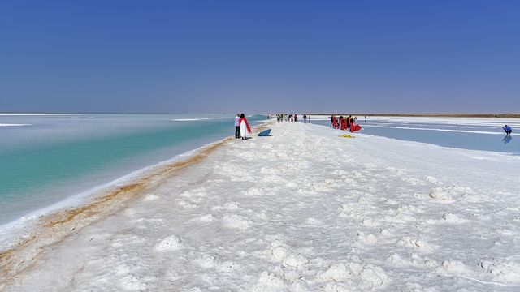
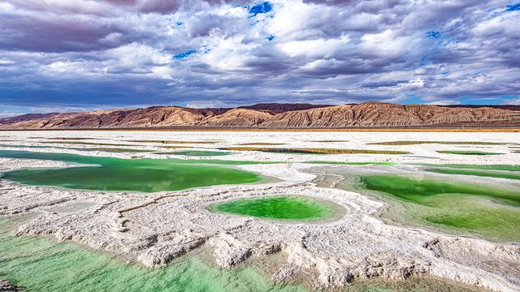
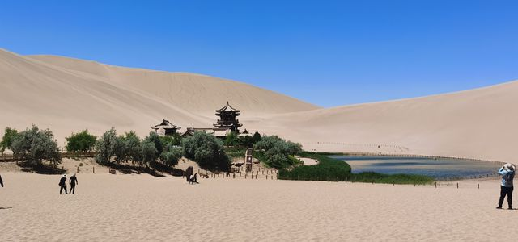
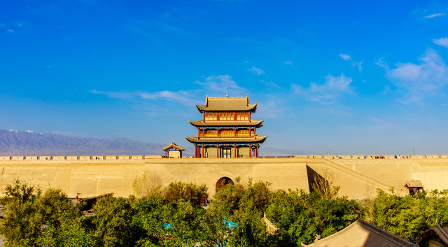
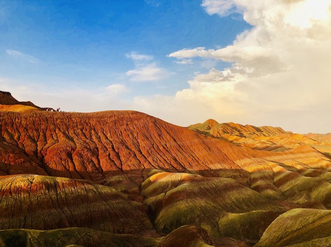
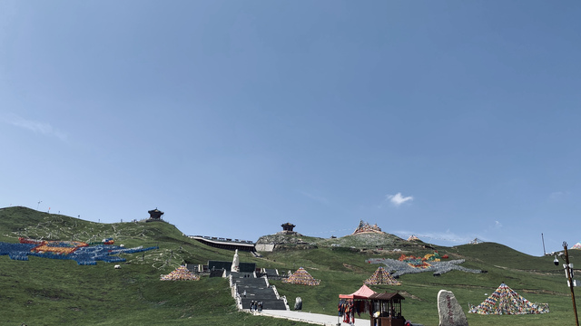
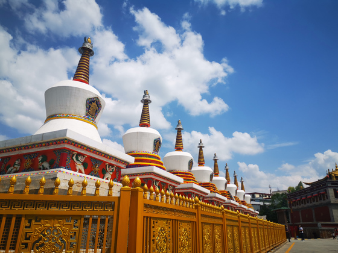

北京 → 青甘大环线 11 天
11天青甘大环线（9.26—10.6）自驾摄影行程：以西宁曹家堡落地取车为起点，沿青海湖—茶卡—大柴旦—黑独山/冷湖—敦煌—嘉峪关—张掖七彩丹霞—祁连—达坂山—西宁构成环线，最后在西宁完成市区与塔尔寺项目后乘Z22软卧返程。全程围绕日出/日落/星空拍摄窗口排程，平光时段用于赶路与休整，已避开鸣沙山万人演唱会与购物点、高强度徒步。
全程路线总览
蓝色实线为本轮已核验的美团地图路线；灰色虚线按每天行程顺序补齐相邻 POI 并连接跨天行程，仅表示计划走向。底图为高德地图真实瓦片（GCJ-02 坐标系）。
逐日行程
9.26 抵达西宁·直驱黑马河日落
请以景点官方信息为准

青海湖·黑马河
建议停留 约2小时环湖西路黑马河段正对日落方位，湖面、经幡与晚霞同框，是青海湖西岸经典日落机位。
日落前后温差大，注意保暖与防高反；请以官方信息为准
已核验
黑马河镇人气炕锅羊肉店，拍摄后补充热量。
9.27 黑马河日出·茶卡晨光·翡翠湖日落
请以景点官方信息为准

青海湖·黑马河
建议停留 约1.5小时黑马河是青海湖西岸日出拍摄机位，晨光洒在湖面与经幡上，出片率高。
日出前提前到位占机位；请以官方信息为准
请以景点官方信息为准

茶卡盐湖
建议停留 约2.5小时“天空之镜”盐湖，上午光线利于倒影与镜面效果拍摄。
风大注意三脚架稳定；请以官方信息为准
请以景点官方信息为准

大柴旦翡翠湖景区
建议停留 约2小时盐湖色彩层次丰富，日落时色彩最饱满，是当日重点拍摄窗口。
关注日落时间提前选机位；请以官方信息为准
9.28 黑独山·冷湖石油基地遗址
请以景点官方信息为准

黑独山
建议停留 约3小时黑色雅丹与胭脂山地貌，光影反差强烈，适合日落与延时拍摄。
地貌脆弱请勿踩踏、勿驶离道路；请以官方信息为准
请以景点官方信息为准
冷湖石油基地遗址(G215店)
建议停留 约2小时废弃石油小镇，暗夜条件好，是星空/银河拍摄点。
夜间拍摄注意保暖、结伴与行车安全；请以官方信息为准
9.29 穿越当金山口·鸣沙山日落首刷
请以景点官方信息为准

鸣沙山月牙泉风景名胜区
建议停留 约3小时鸣沙山日落首刷，金色沙丘与月牙泉同框；多次票自9.29起用。
日落前登山选机位，注意防沙与补水；请以官方信息为准
9.30 鸣沙山日出·莫高窟A类票·又见敦煌
请以景点官方信息为准

鸣沙山月牙泉风景名胜区
建议停留 约2小时鸣沙山日出二刷，利用多次票清晨入景区独占机位。
清晨入景区请核实开放时间；请以官方信息为准
请以景点官方信息为准

敦煌莫高窟
建议停留 约3小时莫高窟A类票15:00场，含数字展示中心观影与窟区参观，是行程历史文化核心。
A类票需按时段入场，建议提前到数字展示中心；请以官方信息为准
请以景点官方信息为准
又见敦煌
建议停留 约1.5小时大型情景剧《又见敦煌》20:00场，全员最高优先安排。
提前入场，注意演出时间；请以官方信息为准
10.1 嘉峪关关城
请以景点官方信息为准

嘉峪关关城
建议停留 约3小时明长城西端关城，日落金色光线下城墙与城楼出片。
请以官方信息为准
10.2 张掖七彩丹霞·卓尔山日落·祁连星空
请以景点官方信息为准

张掖七彩丹霞旅游景区
建议停留 约3.5小时七彩丹霞深度游，上午侧光下色彩层次清晰，是重点拍摄段。
景区内以观光车串联观景台；请以官方信息为准
丹霞游览后就近简餐，节约时间赶往祁连。
请以景点官方信息为准

卓尔山
建议停留 约2.5小时祁连卓尔山日落，丹霞地貌与雪山同框；当晚在祁连拍摄星空。
日落前上山，山上风大注意保暖；请以官方信息为准
10.3 达坂山观景台·抵达西宁
已核验
门源手抓羊肉，翻达坂山前补给。
请以景点官方信息为准

达坂山观景台
建议停留 约1小时227国道达坂山观景台，可俯瞰祁连山与门源谷地，是返西宁途中的观景机位。
海拔较高注意高反；请以官方信息为准
10.4 青海湖北岸补拍·西宁市区
请以景点官方信息为准

青海湖国家重点风景名胜区
建议停留 约2.5小时青海湖北岸（沙岛/仙女湾一带）补拍日出与晨雾，随后返回西宁。
请以官方信息为准
已核验
青海湖边炕锅肉，补拍后用餐。
10.5 塔尔寺晨光·西宁
请以景点官方信息为准

塔尔寺
建议停留 约3小时塔尔寺晨光，酥油花、壁画与堆绣为“艺术三绝”，是人文拍摄重点。
寺内部分区域限制拍摄，请遵守现场规定；请以官方信息为准
10.6 Z22软卧返程
已核验
西宁站附近青海特色菜，13:33乘Z22前用午餐。
返程软卧途中的车上用餐，建议提前自备便携食物。
本轮已核验美食推荐
以下餐厅、评分、人均与推荐菜来自本轮大众点评工具（美食榜单 / 商户搜索）的受控字段，经白名单校验后展示；营业状态与排队情况请以现场为准。
已核验
炕锅羊肉的肉皮金黄，嚼着咯吱带响
总预算分解
行前提醒
- 出行窗口按问卷给定：2026-09-26至2026-10-06，共11天；9.26 14:25落地西宁曹家堡机场后直接取车前往黑马河，当天不在西宁市内停留。
- 9.27茶卡盐湖至大柴旦翡翠湖单段驾驶约410公里、约5小时42分钟，超出“紧凑”节奏单车程4小时的建议；此为参考骨架既定安排，建议评估轮换驾驶或机动调整。
- 部分同日路段（如大柴旦→黑独山、冷湖→敦煌、嘉峪关→七彩丹霞等）本轮未取得工具结果，相关交通已标注“待确认”。
- 餐饮信息来自大众点评商户搜索（dpshopsearchnew Skill）；本轮大众点评榜单能力（dianping_hotboard）不可用，故仅采用商户搜索结果，未使用任何榜单数据。
- 莫高窟A类票、又见敦煌演出、鸣沙山多次票为已锁定项；具体开放时间、入场与预约规则请以景区官方为准。
- 沿途住宿（黑马河/大柴旦/冷湖/敦煌/嘉峪关/张掖/祁连/西宁）需按当日行程就近确认，本次未取得酒店工具结果。
- 高海拔与昼夜大温差：备保暖衣物、抗高反药品与充足饮水；星空/日出拍摄注意结伴与行车安全。
- 拍摄日已按需求预留便携路餐（如9.26落地当天与长途赶路段）。
预约清单
- 出发前确认确认9.26曹家堡机场取车与10.6西宁站还车（异地还车）事宜待确认
- 出发前确认复核莫高窟A类票15:00场次及数字展示中心入场时间待确认
- 出发前确认复核《又见敦煌》20:00场次待确认
- 出发前确认确认鸣沙山月牙泉3天多次票自9.29起用规则待确认
- 出发前确认确认10.6 Z22软卧返程车票（13:33 西宁站）待确认
- 出发前确认按逐日行程确认沿途住宿（黑马河/大柴旦/冷湖/敦煌/嘉峪关/张掖/祁连/西宁）待确认
- 出发前确认确认自驾沿途路况、车辆状况及高海拔地区天气待确认
- 出发前确认确认各景区实时开放时间与预约规则（以官方为准）待确认